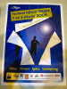
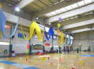
J'arriverai tard le soir du samedi. La salle est déjà décorée de tous côtés. Les pyros et leur vaste queue meublent bien tout un côté.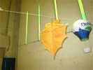
Fabrice Baldan s'est lancé avec bonheur dans le monofil et la création de cerfs-volants bambou/papier, indoor ou outdoor.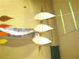
Sa technique progresse et ses cerfs-volants gagnent en taille, mais l'utilisabilité par temps humide va être délicate...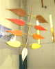
Il devra faire un choix : trop lourd pour l'indoor, mais un peu fragile pour l'outdoor, reste l'aspect décoratif... En ce sens, il tient à souligner le graphisme, en plaçant les baguettes sur le dessous et non sur le dessus !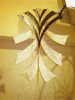
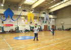
Des Allemands se sont déplacés pour l'occasion : Johannes et ses filles, déjà vus à Belleville en 2007 (voir mon reportage, rappelez-vous, 2 jeunes filles pilotant en jupe !). Johannes a un petit delta très léger, merveilleux à piloter (en indoor, si on connaît le niveau, on se prête volontiers les CVs pour essai...).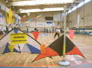
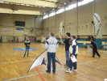
Eric a inventé un concours plus amusant que les figures imposées : les participants exécutent par deux en parallèle 5 tricks tirés au sort comme Fade rattrapé, Boucle, Lazy Suzan, 1/2 Axel, etc, indiqués à la dernière seconde, et le moins bon est éliminé. Les juges sont Franck Guillemet et Damien Galibour.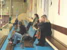
Le public est encore bien clairsemé, mais dimanche après-midi, les gradins seront pratiquement pleins, grâce en partie à une bonne com de Eric (affiches, annonces, prospectus...).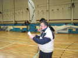
Franck annonce les figures à haute et intelligible voix.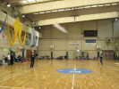
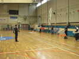
On peut aussi donner le départ en largeur pour les figures courtes.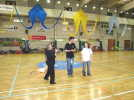
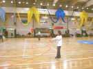
Pour la Petite Finale (3ème <-> 4ème) Bruno rencontrera Nils...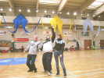
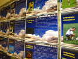
Des lanceurs de boomerang vont aussi se produire dans les créneaux alloués. Ils font beaucoup d'écolage. Pour l'heure, on change de salle pour le déjeuner...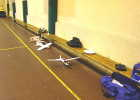
Des avions télécommandés s'y exercent avec bonheur... Heureusement, ils se sont posés, mais on a pu les admirer un peu quand même. Ils arrivent à faire du stationnaire à la verticale. Avec des avions !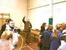
C'est l'heure de déjeuner, mais un petit pot s'impose maintenant, avant que, le soir, les participants ne se soient égayés ! Eric porte un toast à l'indoor et à tous ceux qui ont facilité sa tenue.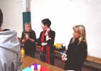
Merci aussi aux filles, des bénévoles qui se dévouent pour les cervolistes parce qu'elles aiment bien l'ambiance, sans doute...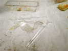
La viande n'est pas dure, mais les fourchettes se consomment vite : il en faut à peu près 3 par repas !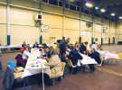
Repas froid, mais abondant et bon : pain frais, charcuterie, salades, légumes, poulet, fromage, desserts, on devrait tenir l'après-midi !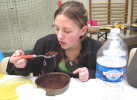
La charmante Marie est aussi gourmande, apprécie le gâteau au chocolat et... liquide le plat !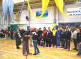
Remise des prix du concours. Christine reçoit une coupe et une bise, son père une coupe seulement...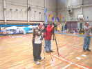
L'événement est immortalisé par des photographes équipés quasi-professionnellement...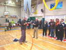
Michel Chantren, dont la spécialité est plutôt le révo a gagné un sac "Seine-Maritime" pour le concours et ses prestations...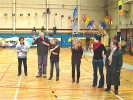
Eric remercie encore tous les bénévoles sans qui ces rencontres ne pourraient avoir lieu... Encore faut-il qu'elles soient motivées !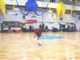
Les lanceurs de boomerang font leur démonstration, ici un rattrapage sous la jambe !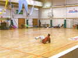
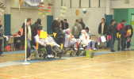
Des handicapés sont venus assister aux démos, et resteront un bon moment...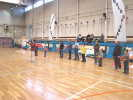
Instruction au lancer de boomerang, sous forme de jeux. On apprend à lancer, mais on peut rattraper les boomerangs tombés, et celui qui n'en a pas est éliminé.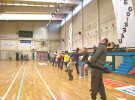
Et hop, on lance d'un coup de poignet. Ce sont des boomerangs d'intérieur en plastique souple, qui ne blessent pas !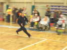
Michel profite de son agilité naturelle pour se jeter sur son boomerang avant tout le monde !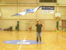
Damien fait une petite démonstration de ce qu'il est possible de faire avec un pilotable... quand on est champion !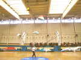
Franck présente ses Malards, quatre à la fois, avec deux cannes à pêche !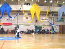
Michel Vanesh s'est costumé, lui aussi, pour présenter son oiseau. Il fait varier la longueur de sa canne, pour des figures tantôt amples, tantôt au contact...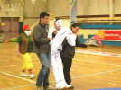
Et on amène l'automate, toujours plus perfectionné. Astrid suit pour la finition de la mise en place...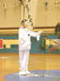
Ca y est, il est paré, après un petit solo de violon. Astrid n'a plus qu'à lui mettre les poignées en main... Sa présentation sera brillante, comme d'habitude !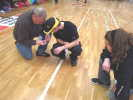
Nils va faire son numéro, avec la fougue de la jeunesse, mais aussi son insouciance du détail. Il a tiré un bon coup pour décoller, et il faudra une aiguille et 2 aides pour desserrer le noeud !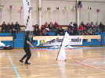
Fabrice Baldan dans son show de Révo. Il a enroulé ses lignes autour de lui et ne tient même plus les poignées !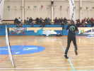
Bon, maintenant, il faut dérouler, tout en maintenant la tension.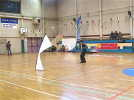
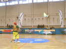
Ce nain de jardin est Astrid, qui a présenté son Zoziau en un vol ample et souple, très agréable à voir.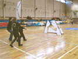
Puis les Crazy Drivers, à trois, présentent un numéro sidérant de précision. Tourner en rond à trois dans un gymnase n'est pas à la portée des débutants ! L'atterrissage final reproduisant leur logo n'est pas le plus facile !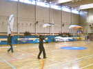
Mais en 2 lignes, Damien n'a pas son pareil, et Ronan se défend bien aussi. Un Fade en simultané, ce n'est pas d'une déconcertante facilité !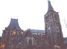
Au retour, je m'arrête pour la nuit à l'ombre de l'église d'Envermeu, splendide édifice gothique très travaillé, avec un choeur beaucoup plus haut que la nef, sans doute ajouté plus tard dans une période de prospérité, et plus flamboyant...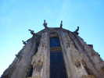